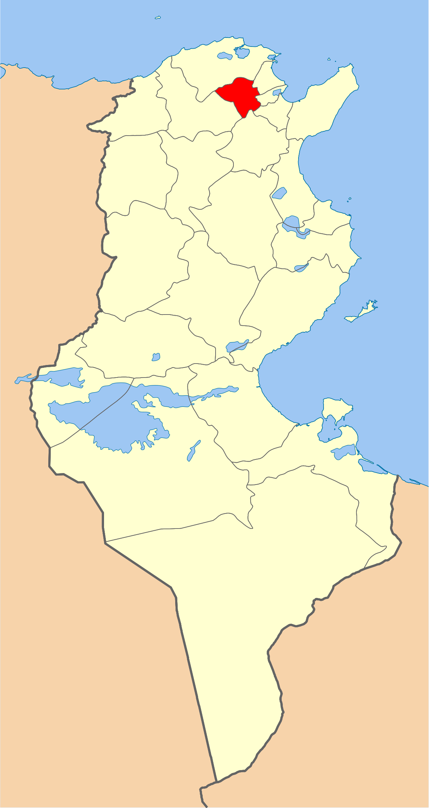
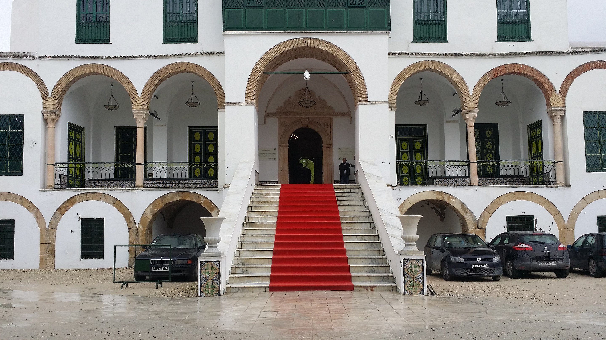
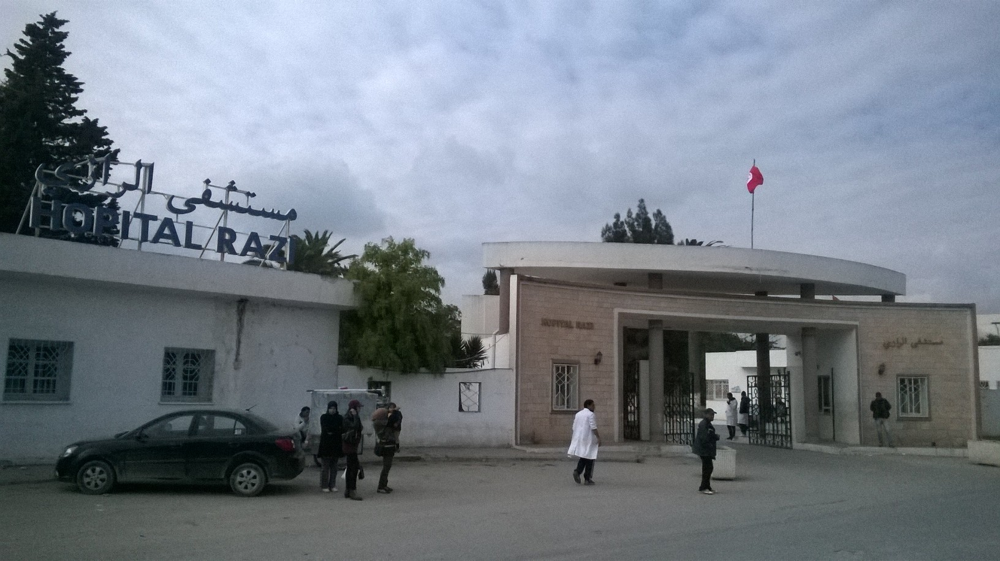
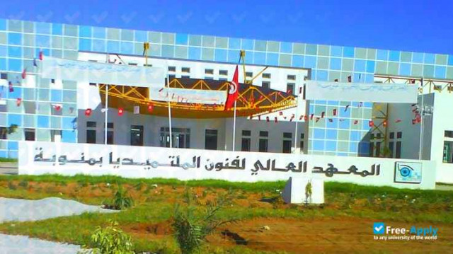
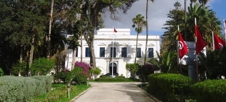
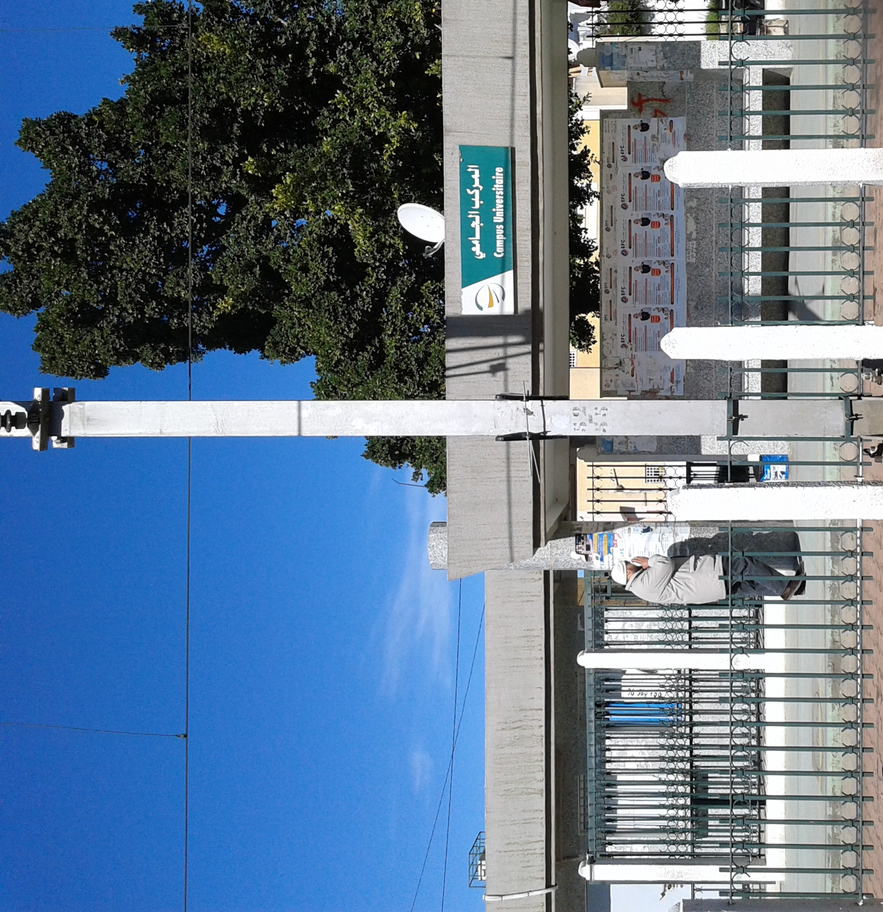

Manouba
Situé au centre des gouvernorats du nord entre Bizerte, Zaghouan, Béja, Tunis, Ariana et Ben Arous, le gouvernorat de Manouba est connu pour son caractère typiquement agricole et industriel.
Municipalité
Université
Musée
Complexe culturel
Quelques chiffres
Superficie
1 137 km²
Nombre de maisons
36 500
Habitants
379 518
Localisation
Le gouvernorat est situé à 5,5 kilomètres de la capitale et est entouré des gouvernorats de Bizerte, Zaghouan, Béja, Tunis, l'Ariana et Ben Arous. La température moyenne est de 18,7 °C et la pluviométrie annuelle est de 450 millimètres. Administrativement, le gouvernorat est découpé en huit délégations, neuf municipalités, huit conseils ruraux et 47 imadas.

Histoire
La municipalité de la Manouba, créée en vertu du décret du 23 juillet 19424, est considérée parmi les municipalités les plus anciennes du Grand Tunis. Elle compte une population de 32 029 habitants en 2014. La Manouba faisait partie des résidences d'été des beys de Tunis. C'est pourquoi la ville abrite un ensemble de palais appartenant à des ministres beylicaux. On dénombre près de vingt grandes demeures, dont huit palais au milieu de segna (vergers) du xixe siècle, construites sur le modèle de palais italiens avec de fortes notes arabo-andalouses.

Culture

hover me
hover me
hover me
hover me